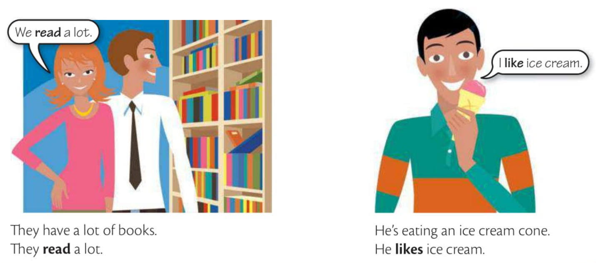
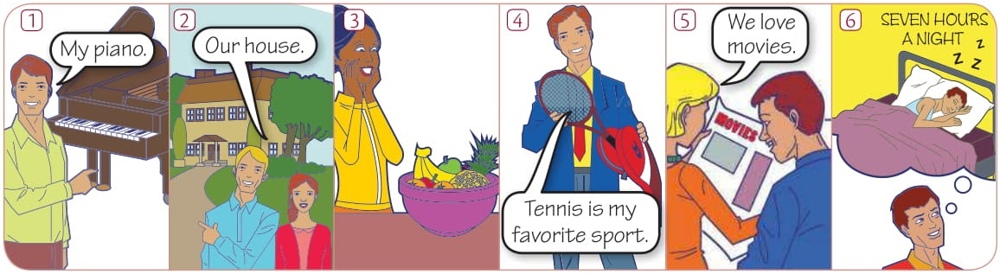

Grammar
Elementary
Unit 5 • I do/work/like etc. (simple present)
A

They have a lot of books. Eles têm muitos livros.
They read a lot. Eles leêm bastante.
He's eating an ice crem. Ele está tomando sorvete.
He likes ice cream. Ele gosta de sorvete.
B
We use the simple present for:
General truths Verdades em geral
I like big cities. Eu gosto de cidades grandes.
Your English is very good. You speak very well. O seu inglês é muito bom. Você fala muito bem.
People need food. Pessoas precisam de comida.
Scientific facts
The sun rises in the east and sets in the west. O sol nasce no leste e se põe no oeste.
The earth goes around the sun. A terra vira em torno sol.
Water boils at 100 degree celsius. A água ferve a 100 graus Celsius.
Stars explode when they die forming a supernova. As estrelas explodem quando morrem formando uma supernova.

Routines
I study English every day. Eu estudo inglês todos os dias.
On week days I wake up 6:30 to go to work. Nos dias de semana eu acordo 6:30 para ir para a escola.
Tom starts work at 7:30 and finishes at 8:00 at night. Tom começa a trabalhar às 7h30 e termina às 8h da noite.
Tom works very hard. Tom trabalha muito.
We do a lot of different things in our free time. Fazemos muitas coisas diferentes em nosso tempo livre.
Não se omite o pronome "it".
It costs a lot of money to build a hospital. Custa muito caro construir um hospital.
It feels good. Isso é bom.
It makes sense. Faz sentido.
It matters a lot to me. É muito importante para mim.
It rains a lot in London. Chove muito em Londres.
It never snows in winter. Nunca neva no inverno.
It seems interesting. Parece interessante.
This computer = It works very well. Este computador funciona muito bem.
It goes like this. É / Aconteçe assim.
C
I/you/we/they
like/work/read/live/do/watch/wash/study/cry
Add -s, -es, and -ies to he/she/it affirmative singular only
Rule Regra
Rule #1. -s:
call → calls ligar, chamar • Joe calls his father once a week.
eat → eats comer • David eats breakfast every morning.
know → knows saber, conhecer • My grandpa knows how to fix bicycles.
look → looks olhar • Kate looks out the window every morning to enjoy the sunrise.
read → reads ler • He reads a book in a week.
run → runs correr • Jennifer runs five miles every day.
sleep → sleeps dormir • The dog sleeps at the foot of the bed.
talk → talks falar, conversar • She talks to her mother on the phone every week.
walk → walks andar, caminhar • Once in a while Jimmy, walks to work.
work → works trabalhar • Sarah works as a teacher.
come → comes vir • Rachel comes to visit her grandparents every summer.
drive → drives dirigir • James drives to work twice a week.
like → likes gostar • John likes to play soccer.
live → lives viver, morar • Paul lives in a small cottage near the lake.
love → loves amar • Joe loves his dog.
make → makes fazer • Stephanie makes amazing cakes.
move → moves mover-se • The robot moves autonomously, following programmed instructions.
practice → practices praticar • She practices the piano for two hours every day
save → saves salvar • Matthew saves important documents in a secure folder on his computer.
see → sees ver • John sees his friend at the coffee shop every morning.
take → takes pegar, levar • Lisa takes her dog for a walk in the park every night.
use → uses usar • The teacher uses interactive tools to engage the students in the lesson.
write → writes escrever • Mary writes poetry in her spare time.
Rule #2. If a verb ends with -o, -ch, -sh, -s, -x, and -z, add -es:
-o
do → does fazer • Robert does his homework before bedtime.
go → goes ir • Patricia goes to the gym every morning.
-ch
itch → itches coçar (sintoma) • The rash on David's arm itches terribly.
finish → finishes terminar • Mark finishes his homework before dinner.
march → marches marchar • The soldier marches in perfect formation during the training exercise.
scratch → scratches coçar • John scratches his head as he tries to solve the puzzle.
teach /tiːtʃ/ → teaches /tiːtʃɪz/ ensinar • Barbara teaches mathematics at a local school.
watch → watches assistir • Betty watches her favorite TV show every evening.
-sh
rush → rushes precipitar-se, apressar-se • The doctor rushes to the emergency room to see his patient.
wash → washes lavar • Emily washes her hands before every meal.
-s
guess → guesses adivinhar • A fortune teller is someone who guesses the outcome of peoples's romantic lives.
kiss → kisses beijar • Sharon kisses her daughter on the forehead before she goes to bed.
miss → misses sentir falta / perder o horário • Jacob misses his friends from his family because now he lives abroad.
pass → passes passar • The runner passes the finish line, winning the race.
-x
fix → fixes consertar • An IT technician fixes computer issues, restoring their functionalities.
mix → mixes misturar • A bartender mixes various types of drinks.
-z
buzz → buzzes zumbir • A bee buzzes angrily when threatened. Uma abelha zumbe com raiva quando ameaçada.
Rule #3. When -y is preceded by a consonant, replace it with -ies:
carry → carries carregar • Susan carries a heavy backpack to school every day.
cry → cries chorar • The baby cries when it's hungry or needs attention.
fly → flies voar • Time flies. O tempo voa.
hurry → hurries apressar-se • Lisa hurries to catch the bus every morning.
marry → marries casar-se • Then the king marries a princess.
party → parties dar uma festa • Steven parties with his collegues every Friday after work. Ele festeja o tempo todo.
reply → replies responder • Anthony usually replies emails.
study → studies estudar • Emily studies Spanish in her free time.
try → tries tentar • Ashley tries a new recipe every weekend to expand her culinary skills.
But when the verb is preceded by a vowel, add -s:
enjoy → enjoys • Nick enjoys video games. Nick gosta de video games.
lay → lays • The hen lays eggs. A galinha bota ovos.
pay → pays • John pays the bill. O john paga a conta.
play → plays • Mike plays soccer on weekend. O Mike joga bola no fim de semana.
say /seɪ/ → says /sez/ • "I'm happy". Kate says "Estou feliz". A Kate diz.
stay → stays • Mary stays at school after classes end. A Mary fica/permanece na escola depois que as aulas terminam.
Irregular
have → has ter • Joe has a big house.
D
Adverbs of frequency
always sempre • Robert always arrives on time for meetings.
usually normalmente • Carol usually reads a book before going to bed.
sometimes às vezes • Brian sometimes goes for a run in the morning.
often com frequência • Amanda often takes her dog for a walk in the park.
never nunca • Nicole never eats meat because she's a vegetarian.
EXERCISES
5.1 Choose the correct verb.
1. He _____ (read) in bed.
2. she _____ (think) she's the best, but she isn't.
3. The bird _____ (fly) very high.
4. he _____ (dance) very well.
5. she _____ (have) two kids.
6. My work _____ (finish) at 6:30 p.m.
7. This cell phone _____ (cost) an arm and a leg.
8. John _____ (like) Science.
9. Mike _____ (take) the bus to go to work.
10. My dad _____ (fix) our home when it needs repair.
5.2 Complete the sentences about the people in the pictures. Use:
eat
go
live
play
play
sleep

1. He the piano.
plays
2. They in a very big house.
live
3. a lot of fruit.
She eats
4. tennis.
He plays
5. to the movies a lot.
They go
6. seven hours a night.
He sleeps
5.3 Complete the sentences. Use these verbs:
boil
close /z/
cost
cost
like
like
meet
open
speak
teach
wash
1. Maria four languages.
speaks
2. Banks usually at 9:00 in the morning.
open
3. The art museum at 5:00 in the afternoon.
closes
4. Jessica is a teacher. She math to young children.
teaches
5. My job is very interesting. I a lot of people.
meet
6. Maike's car is always dirty. He never it.
washes
7. Fodd is expensive. It a lot of money.
costs
8. Shoes are expensive. They a lot of money.
cost
9. Water at a 100 degrees Celsius.
boils
10. Julia and I are good friends. I her , and she .
like / likes
5.4 Write setences from these words. Use the right form of the verb (arrive or arrives, etc.)
1. (always / early / Sue / arrive)
Sue always arrives early.
2. (to the movies / never / I / go)
I never go to the movies.
3. (work / Hannah / hard / always)
Hannah always works hard.
4. (like / chocolate / children / usually)
Children usually like chocolate.
5. (Julia / parties / enjoy / always)
Julia always enjoys parties.
6. (often / people's names / I / forget)
I often forget people's names.
7. (TV / Nick / watch / never)
Nick never watches TV.
8. (usually / dinner / we / have / at 6:30)
We usually have dinner at 6:30.
9. (Jenn / always / nice clothes / wear)
Jenn always wears nice clothes.